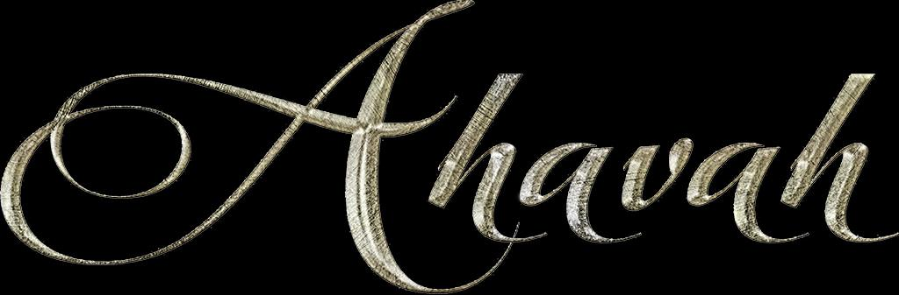
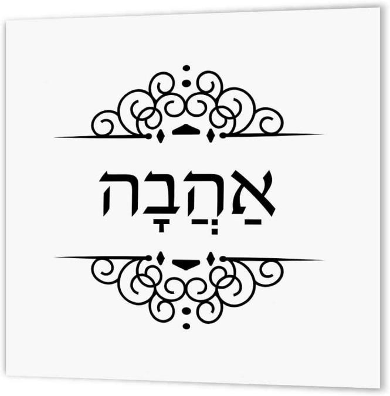

Contents


The Ancient Hebrew letters contain a long-concealed love secret.
Generosity is the manifestation of Love. Directly linked to taking ACTION and being OBEDIENT.
Love may place emphasis on being the recipient, but Ahavah centers around being the giver. There is a distinction. Think about the fact that the Hebrew term "ahavah" is more of a behaviour than a feeling. It is not a situation that is imposed on you, but rather a state of being that you achieve through your acts of giving. Love is not something that just happens to you - it is something that you actively choose to give.
The Hebraic concept of love, referred to as "ahavah," differs greatly from the modern culture's understanding of love.
In Hebrew, LOVE is connected directly with ACTION and OBEDIENCE.
Strong's Concordance defines “ahavah” as:
H160. ahavah ►
love (noun)
Original Word: אַהֲבָה
Part of Speech: Noun Feminine
Transliteration: ahavah
Phonetic Spelling: (a-hav-aw)
Definition: love (noun)
NAS Exhaustive Concordance:
Word Origin
from aheb
Definition
love (noun)
NASB Translation love (28), lovesick* (2), lovingly (1).
Strong's Exhaustive Dictionary:
to have affection, sexually or otherwise, love, like, to befriend, to be intimate."
It evokes the concept of yearning or longing for someone else. In the Hebrew language, ahavah is a verb that denotes an action or a deed. Ahava encompasses more than just emotions. To fully grasp the concept of ahavah, we will analyse the origin and meaning of the Hebrew word and understand the cultural and traditional aspects of love in the Hebrew context.
The Hebrew language commonly utilizes a three-consonant root structure, which serves as the fundamental building block for the formation and comprehension of words, thereby encapsulating their essential meanings. The etymology of the term "ahavah" can be traced back to the root word "ahev. "
The Hebrew word ahev means "to give. " True love, or ahavah, is focused on giving rather than receiving. Having someone's undivided attention doesn't necessarily equate to love. Love is not about experiencing a certain emotion or finding a solution. Ahavah is about dedicating oneself and investing time and attention. Deep connections are formed through mutual generosity.
As we have seen above, the Hebrew word "ahavah" is spelled "aleph, hey, bet, hey."
The letters "aleph, hey, bet" spell the root word “have” in Hebrew and hold a hidden secret of love that has been kept for millennia. The hidden truth is revealed by the significance of every Hebrew letter in "ahev. "
Bet – House Hey – Behold Aleph - Father/Oneness
<<<<
Father Behold House
In this scenario, the Paternal figure observes the Dwelling. The Father gazes upon the House.
Yochanan Aleph/1 John4
7 Beloved ones, let us love one another, because love is of Elohim, and everyone who loves has been born of Elohim, and knows Elohim. 8 The one who does not love does not know Elohim, for Elohim is love. 9 By this the love of Elohim was manifested in us, that Elohim has sent His only brought-forth Son into the world, in order that we might live through Him.
Practicing obedience demonstrates our love for the Most High, AHAVAH means giving devotion and time!
The primary goal of our Messiah's presence is not just to be in a relationship with you. He came with the purpose of reinstating our connection to the eternal agreement with our Father.
The church emphasizes the importance of having a "relationship with Jesus," but fails to educate on the significance of being in a covenant with our Creator. Understanding this vital and fundamental fact of your faith is essential and can greatly affect your salvation.
If you don't comprehend the concept of being in a Covenant with our Creator, then you won't be able to comprehend the Messiah that He sent. This is the precise reason why Yahushua was put to death on the stake - because the people failed to comprehend the reason for his initial coming. Their lack of understanding was due to their unfamiliarity with the Scriptures. Hear what our Messiah said what he heard the Father said:
Mattithyahu/Matthew 2229And יהושע answering, said to them, “You go astray, not knowing the Scriptures nor the power of Elohim.”
The connection between love and obedience is straightforward. If we have a genuine love for Elohim, we will strive to understand and follow His teachings through His Messiah, Yahushua. If we are not making an effort to adhere to His commands, we cannot genuinely profess our love for Him. Actions carry more impact than mere words. Showing obedience is evidence of our love for Him.
Become people who put the Word into action, not just listening to it and fooling yourselves.
Those who study and follow the perfect Torah of freedom and put it into action will be blessed in their efforts. This person does not just listen and forget but acts upon it as well.
Ya’aqov/James 122And become doers of the Word, and not hearers only, deceiving yourselves. 23Because if anyone is a hearer of the Word and not a doer, he is like a man who looks at his natural face in a mirror, 24 for he looks at himself, and goes away, and immediately forgets what he was like.
Yochanan/John 1421“He who possesses My commands and guards them, it is he who loves Me. And he who loves Me shall be loved by My Father, and I shall love him and manifest Myself to him.” 23 יהושע answered him, “If anyone loves Me, he shall guard My Word. And My Father shall love him, and We shall come to him and make Our stay with him. 24“He who does not love Me does not guard My Words. And the Word which you hear is not Mine but of the Father Who sent Me.
Mattithyahu/Matthew 724“Therefore everyone who hears these words of Mine, and does them, shall be like a wise man who built his house on the rock, 25 and the rain came down, and the floods came, and the winds blew and beat on that house, and it did not fall, for it was founded on the rock. 26“And everyone who hears these words of Mine, and does not do them, shall be like a foolish man who built his house on the sand, 27and the rain came down, and the floods came, and the winds blew, and they beat on that house, and it fell, and great was its fall.”
Obedience is essential, as it forms the basis for everything else. Without it, we have no basis to build upon. If we don't follow and obey יהוה's commands, we have no foundation, no certainty, and no support to lean on in times of trial. Messiah recommended following his guidance as the path to wisdom. By trusting, following, and obeying him, one will establish a solid foundation.
In the intricately intertwined Old and New Covenants [Testaments], the term "obey" is connected to the concept of listening. Obedience is the proactive and favourable reaction to heeding the guidance of the Ruach Ha Qodesh as communicated through the Scriptures by Messiah.
Luqas/Luke 1128“Blessed rather are those who hear the word of יהוה and keep it!”